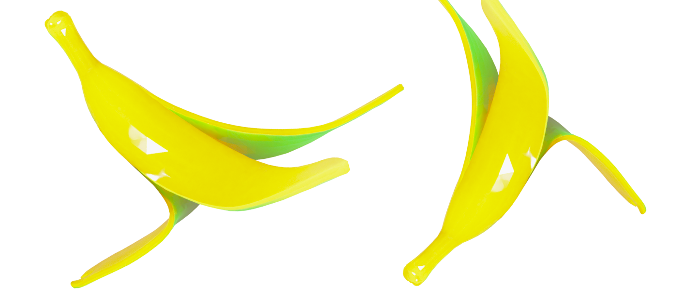

Статьи
Конверсия пищевых отходов
В нашей жизни пищевые отходы являются серьезной проблемой, которую необходимо решать. Каждый день мы выбрасываем в мусорную корзину остатки еды, которые могут быть переработаны и использованы в разных целях.
Пищевые отходы являются одной из главных причин загрязнения окружающей среды, так как они выделяют метан.
 Что с ними делать?
Что с ними делать?Одним из способов утилизации пищевых отходов является компостирование. Этот процесс позволяет превратить остатки пищи в удобрение для растений.
Пищевые отходы можно использовать для производства биогаза, который может заменить традиционные источники энергии.
Еще одним способом утилизации является переработка остатков пищи в корм для животных.